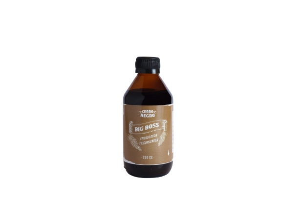
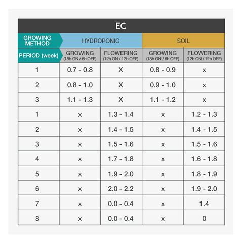

Bigboss

analisis nutricional
- NITROGENO ORGÁNICO N 7,5%
- FÓSFORO P 1,6%
- POTASIO K 10%
- HIERRO Fe 0,10%
- AZUFRE S 0,6 %
- CALCIO K 0,5%
- MANGANESIO MN 0,3%
- COBRE CU 0,2%
- BORO B 0,25%
- MATERIA ORGANICA 86%
- FERTILIZANTE ORO NEGRO
informacion adicional
Acelera la germinación de semillas.
Favorece el desarrollo de las raíces.
Estimula el crecimiento vegetal.
Reduce las pérdidas de nutrientes.
Mejora la calidad y producción de las plantas.
Actúa como quelato natural para los microelementos del suelo.
Ideal para acompañar dietas orgánicas de sustratos, humus y guanos.
Estimula la producción de enzimas en las plantas.
